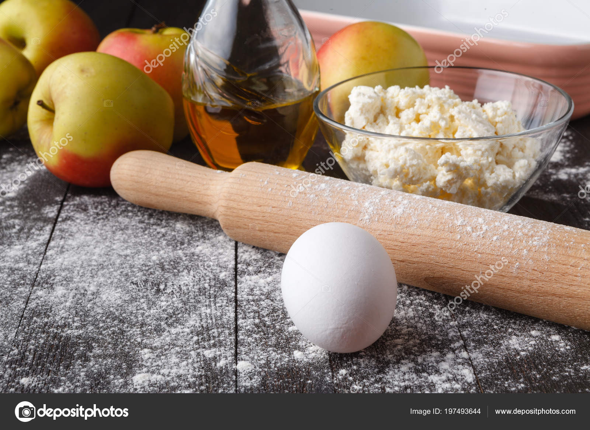

La tarta de manzana es una de la recetas mas comunes de nuestra reposteria y de las que mas variedades exixten. Vamos a ver paso a paso, esta receta de
con base de galleta y mantequilla, de forma facil y sencilla, para 4 personas. Para ello utilizaremos un vaso de 200ml con el fin de usarlo de medidor para los ingredientes

Selectores de presencia y valor
En esta practica como en la anterior veremos como insertar atributos con los cuales resaltar diferentes aspectos y elementos dentro de nuestra pagina, para ello vamos a demostrarlo creando un areceta de cocina
Receta de la tarta de Manzana
Ingredientes
-

- 100g de galletas tipo maria
- 50g de mantequilla
- 6 manzanas medianas
- 200ml de lache
- 200ml de harina
- 100ml de azucar
- 5g de mermelada de melocoton o albaricoque
Como hacer la tarta de manzana paso a paso
1.- Trituramos la galleta. Para ello puedes hacerlo con una batidora americana, una batidora manual o introduciendo las galletas en una bolsa y sacudiéndolas con un rodillo. Después las ponemos en un plato, le añadimos la mantequilla derretida y mezclamos bien con una cuchara. Quedará como una especie de arena gruesa húmeda. Ésto, será la base de nuestra tarta de manzana.
2.-Ponemos esta mezcla en el fondo de un molde desmontable para tartas. Con estas cantidades, en uno de 18-20cm, estará bien. Untamos el molde con aceite o con más mantequilla derretida (para que no se pegue la tarta) en introducimos la mezcla de galleta y mantequilla. La aplastamos y extendemos por toda la superficie del molde, de tal manera que quede bien compacta. Ésta será la base de nuestra tarta de manzana.
3.-Ahora, de nuevo en una batidora americana o un en un vaso batidor, añadimos 4 de las manzanas peladas, sin el corazón y cortadas en cubo, la harina, la leche y el azúcar. Trituramos todo bien
4.-Introducimos esta mezcla -que se tratará simplemente del relleno de la tarta de manzana- sobre la base de galleta y mantequilla. Encima, ponemos las otras dos manzanas, también peladas y cortadas en láminas muy finas. Colócacas un poco a lo loco, al azar, o intenta darles una forma armoniosa, si te importa la decoración
5.- Introducimos todo en el horno, previamente calentado a 180ºC. Dejamos aquí durante alrededor de 50 minutos.
6.-Pasado el tiempo, la sacamos y dejamos templar la tarta de manzana un poco. Un consejo. En este caso, no te fies del viejo truco de pinchar con el palillo porque esta tarta, no termina de cuajar hasta que se haya enfriado por completo. Por ello, mejor esperar a que se enfríe.
7.-Una vez fuera del horno, y después que se haya templado un poco, la desmoldamos y la pintamos por toda su superficie con la mermelada. Le dará un toque muy brillante y mejorará mucho su sabor